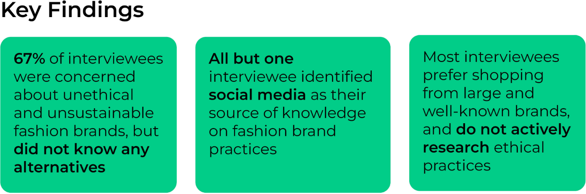

Greenthread
Greenthread is a browser extension that increases consumer awareness about unethical practices within the fashion industry. It was developed in collaboration with other UX designers as my Bachelor of Design capstone project.
Timeframe: 12 weeks
Tools used: Figma, Adobe Photoshop
Situation: There is a lack of transparency within the fashion industry's supply chain, particularly with brands using deceptive tactics to appear ethical. While consumers want to be more informed about the values of brands they purchase from, these brands have a vested interest in ensuring that consumers remain uninformed about their practices.
Concept: Whenever a user visits a fashion brand's website, Greenthread notifies them of the brand's ethical practices. Users can choose which topics they want to be informed about by selecting 'flags' that encompass various ethical concerns. Greenthread's information is community-sourced and verified by moderators. Each flag is accompanied by links to evidence and alternatives to purchase from.
Research
We interviewed six different potential users with an interest in ethical brand practices, including fashion professors and clothing boutique owners.
SWOT Analysis
- Easily customizable
- Doesn't interrupt the shopping experience
- Convenient
- Doesn't work for in-person shopping
- Unable to cover all ethical practices
- Relies on community moderators
- Crowdsourced information
- All information in one place
- Able to expand into other industries
- Community-sourced information may not be reliable
- User confusion and skepticism
- Users submitting information must be onboarded
We created personas such as Emily in order to better understand our users and guide our design choices.
Later in the prototyping process, we created a photo storyboard with one of the personas to visualise a typical use case for the extension. We showcased the process of contributing and amending information to emphasize the community-sourced and moderated aspect of Greenthread.

Prototyping
In order to identify areas of improvement in our design, we conducted user evaluation interviews using a low-fidelity prototype (click on the top right corner to enter fullscreen mode). Participants were instructed to complete a set of tasks that simulated use cases for Greenthread. After completing these tasks, they answered questions about their user experience.

Our key takeaways were the importance of conveying the reliability of community-sourced information (by providing multiple sources) and not interrupting the user's shopping experience.
Final Design

Next Steps
While Greenthread in its current state shows promise, we've identified clear steps to take in order to improve the extension based on user feedback:
Clarity:- Change the wording of the ‘confidence’ bar and add text that explains its purpose
- Update the contribution form to be more descriptive
- Ensure text is set to a readable size
- Provide a colourblind/high-contrast mode for visually impaired users
- Add more methods to submit information to the extension
- Include a help/documentation page with examples of submitted information